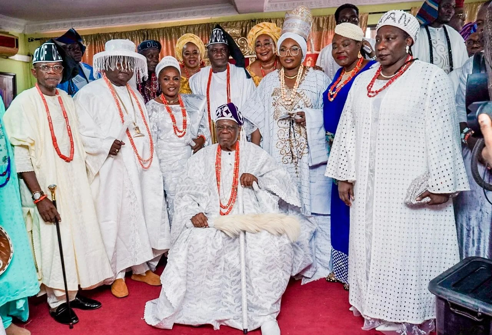

Ogun monarch confers chieftaincy titles on Adebutu, Iyabo Obasanjo

The Osile of Oke-Ona Egba, Oba Adedapo Tejuoso, has installed Peoples Democratic Party governorship candidate Oladipupo Adebutu, his wife and several other party figures as traditional titleholders. The ceremony took place on Thursday at the monarch’s palace in Sapon, Abeokuta, and drew traditional rulers, political figures, community leaders and members of the Ogun State PDP leadership.
Adebutu received the title Lisa Aje of Oke-Ona Egba, while his wife, Adenike, was named Yeye Lisa Aje. Senator Iyabo Obasanjo was installed as Okanlomo Obinrin, and state PDP chairman Abayomi Tella received the title Fiwagbola. Alhaja Lateefat Sowunmi-Kolapo became Olu Nla Obinrin.
Other recipients were Dele Olaleye, named Sesogbayi; Ambassador Folake Marcus-Bello, named Oluomo Obinrin; and Chief Abiodun Ogunremi, named Otun Olu-Nla, all of Oke-Ona Egba. The monarch presented certificates and carried out traditional rites associated with the installations.
Tejuoso said the titles recognised people whose character, credibility and contributions had earned the traditional institution’s confidence. He described Adebutu as trustworthy and urged him and his wife to use the recognition to support development in Oke-Ona Egba and Ogun State. Adebutu called the honour a responsibility and a call to greater service, and pledged to contribute to development in Egbaland and the state.
The installation comes as Adebutu’s status as the PDP’s candidate for the 2027 Ogun governorship election faces uncertainty. He emerged as the party’s nominee after its governorship primary in May, but was omitted from the Independent National Electoral Commission’s list of candidates for the February 2027 election. His petition over the omission was rejected, while Adebutu has maintained that he remains the party’s duly nominated candidate.
Source: Punch